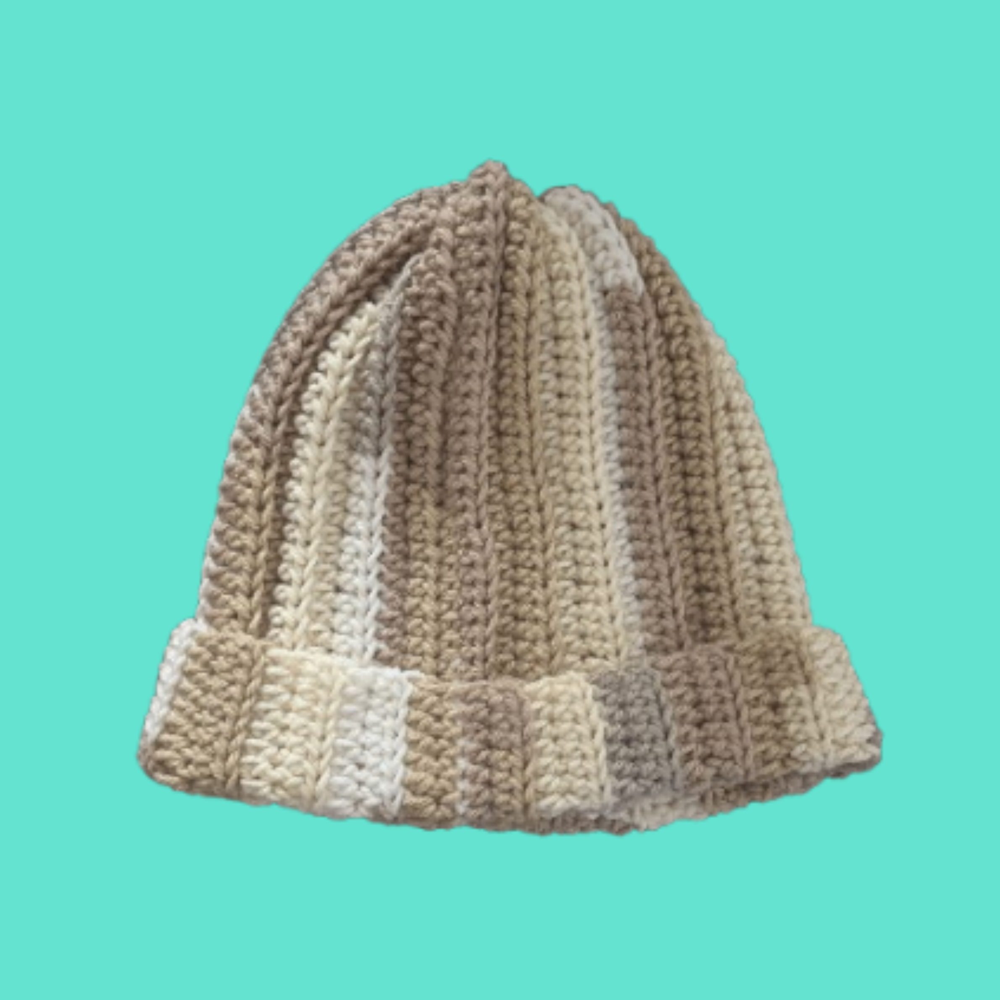
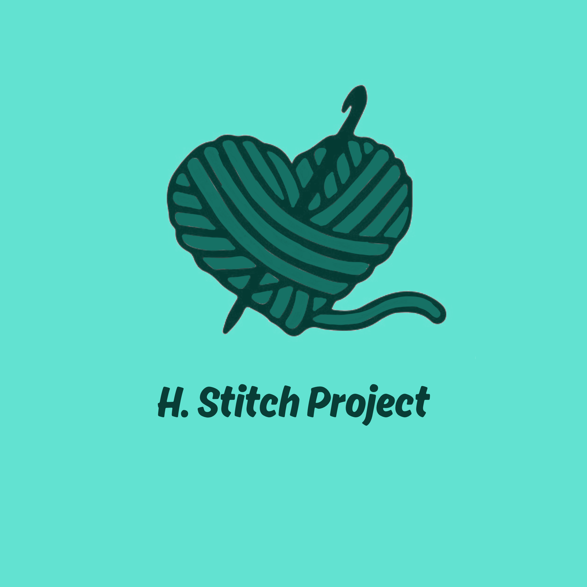
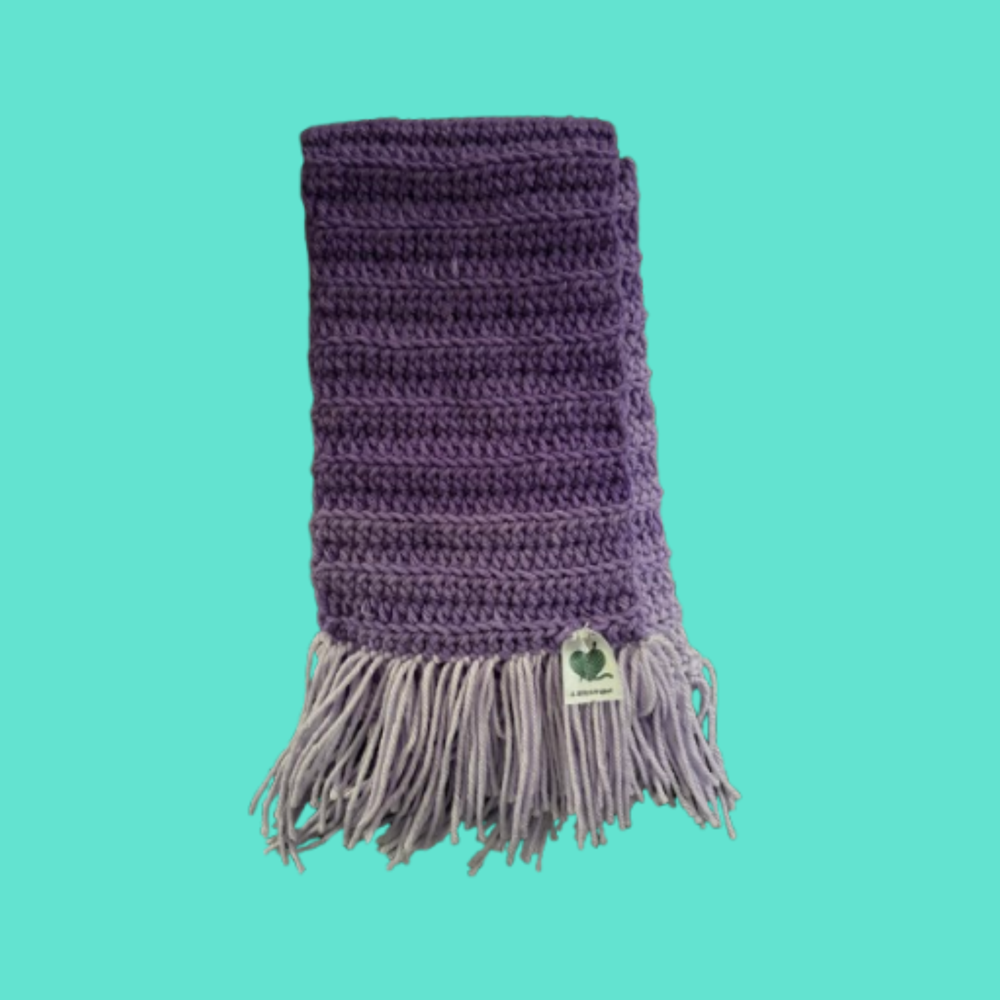

Beanies

A crocheted collection of warm and cozy beanies.
Crochet • Handmade • Donations
I create and donate handmade crochet items to bring warmth and comfort to people in need.

My name is Hailey Cunningham, and I started the H.Stitch Project as a way to give back to my community through handmade creations. Each project is made with care, creativity, and a love for bright colors, turning simple strands of yarn into pieces that feel welcoming and meaningful.
Through crocheting, I hope to bring comfort and kindness to others by donating my handmade items to organizations and people who can benefit from them. Every stitch represents the time, effort, and heart put into creating something special for someone else.
I designed and coded this website myself to share the journey of H.Stitch Project, showcase my work, and keep track of future projects and donations. As this project continues to grow, the website will continue to evolve with new updates, features, and creations along the way.

A crocheted collection of warm and cozy beanies.

Cozy winter pieces to keep warm.
[Placeholder]
This is a place to leave kind words, encouragement, and reflections about the H.Stitch Project. I’d love to hear from you!
Add a Comment